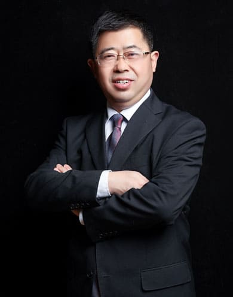

王进阶
全国知名校长，湖北省优秀校长，中学化学高级教师，国际奥林匹克化学竞赛教练。在民办教育二十多年的探索中成效卓著，尤其在“三自”高效课堂、校本课程开发、德育主题活动、素质教育、国学教育、教育教学综合改革研究等方面取得了一系列成果，学校中高考成绩连续12年位居黄冈第一，学生行为习惯好、兴趣爱好广、综合素质高、发展后劲足、责任担当强。
Read More全国知名校长，湖北省优秀校长，中学化学高级教师，国际奥林匹克化学竞赛教练。在民办教育二十多年的探索中成效卓著，尤其在“三自”高效课堂、校本课程开发、德育主题活动、素质教育、国学教育、教育教学综合改革研究等方面取得了一系列成果，学校中高考成绩连续12年位居黄冈第一，学生行为习惯好、兴趣爱好广、综合素质高、发展后劲足、责任担当强。
Read More丁时辉，小学语文高级教师，20多年高端民办学校教育与管理经验，先后担任教务主任、教学副校长、学部校长等职。在《小学语文教学》《中小学管理》等专业期刊发表教育教学论文100余篇，被誉为“学术型校长”。
Read More